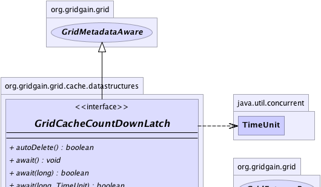
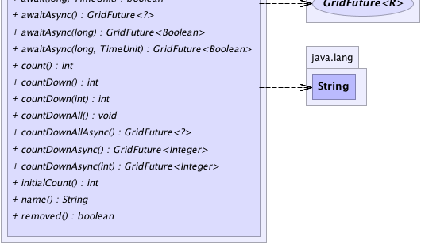

|
|

|

|
|

|

|

|
GridGain™ 3.6.0c
Community Edition |
|||||||||
| PREV CLASS NEXT CLASS | FRAMES NO FRAMES | |||||||||
| SUMMARY: NESTED | FIELD | CONSTR | METHOD | DETAIL: FIELD | CONSTR | METHOD | |||||||||
public interface GridCacheCountDownLatch
This interface provides a rich API for working with distributed count down latch.
Note that distributed count down latch is only available in Enterprise Edition.
java.util.CountDownLatch.
Note that you cannot remove count down latch having count greater that zero. It should be
counted down to zero first.
GridCache.countDownLatch(String, int, boolean).
| Wiki | |
| Forum |
GridCache.countDownLatch(String, int, boolean),
GridCache.countDownLatch(String),
GridCache.removeCountDownLatch(String)
|  |
|  |
| Method Summary | |
|---|---|
boolean |
autoDelete()
Gets autoDelete flag. |
void |
await()
Causes the current thread to wait until the latch has counted down to zero, unless current thread is interrupted. |
boolean |
await(long timeout)
Causes the current thread to wait until the latch has counted down to zero, unless the thread is interrupted, or the specified waiting time elapses. |
boolean |
await(long timeout,
TimeUnit unit)
Causes the current thread to wait until the latch has counted down to zero, unless the thread is interrupted, or the specified waiting time elapses. |
GridFuture<?> |
awaitAsync()
Asynchronously waits until the latch has counted down to zero. |
GridFuture<Boolean> |
awaitAsync(long timeout)
Asynchronously waits until the latch has counted down to zero or the specified waiting time elapses. |
GridFuture<Boolean> |
awaitAsync(long timeout,
TimeUnit unit)
Asynchronously waits until the latch has counted down to zero, or the specified waiting time elapses. |
int |
count()
Gets current count value of the latch. |
int |
countDown()
Decrements the count of the latch, releasing all waiting threads on all nodes if the count reaches zero. |
int |
countDown(int val)
Decreases the count of the latch using passed in value, releasing all waiting threads on all nodes if the count reaches zero. |
void |
countDownAll()
Counts down this latch to zero, releasing all waiting threads on all nodes. |
GridFuture<?> |
countDownAllAsync()
Asynchronously counts down this latch to zero, releasing all waiting threads on all nodes. |
GridFuture<Integer> |
countDownAsync()
Asynchronously decrements the count of the latch, releasing all waiting threads if the count reaches zero. |
GridFuture<Integer> |
countDownAsync(int val)
Asynchronously decreases the count of the latch using passed in value, releasing all waiting threads on all nodes if the count reaches zero. |
int |
initialCount()
Gets initial count value of the latch. |
String |
name()
Gets name of the latch. |
boolean |
removed()
Gets removed status of the latch. |
| Methods inherited from interface org.gridgain.grid.GridMetadataAware |
|---|
addMeta, addMetaIfAbsent, addMetaIfAbsent, allMeta, copyMeta, copyMeta, hasMeta, hasMeta, meta, putMetaIfAbsent, putMetaIfAbsent, removeMeta, removeMeta, replaceMeta |
| Method Detail |
|---|
String name()
int count()
int initialCount()
boolean autoDelete()
autoDelete flag. If this flag is true latch is removed
from cache when it has been counted down to 0.
autoDelete flag.
void await()
throws GridException
If the current count of the latch is zero then this method returns immediately.
If the current count is greater than zero then the current thread becomes disabled for thread scheduling purposes and lies dormant until one of two things happen:
GridCacheCountDownLatch.countDown() method on any node; or
If the current thread:
GridInterruptedException is thrown and the current thread's
interrupted status is cleared.
GridException - If operation failed.
GridInterruptedException - if the current thread is interrupted
while waiting
boolean await(long timeout)
throws GridException
If the current count is zero then this method returns immediately
with the value true.
If the current count is greater than zero then the current thread becomes disabled for thread scheduling purposes and lies dormant until one of three things happen:
GridCacheCountDownLatch.countDown() method on any node; or
If the count reaches zero then the method returns with the
value true.
If the current thread:
GridInterruptedException is thrown and the current thread's
interrupted status is cleared.
If the specified waiting time elapses then the value false
is returned. If the time is less than or equal to zero, the method
will not wait at all.
GridInterruptedException - If the current thread is interrupted
while waiting.
GridException - If operation failed.timeout - The maximum time to wait in milliseconds.
True if the count reached zero and false
if the waiting time elapsed before the count reached zero.
boolean await(long timeout,
TimeUnit unit)
throws GridException
If the current count is zero then this method returns immediately
with the value true.
If the current count is greater than zero then the current thread becomes disabled for thread scheduling purposes and lies dormant until one of three things happen:
GridCacheCountDownLatch.countDown() method on any node; or
If the count reaches zero then the method returns with the
value true.
If the current thread:
GridInterruptedException is thrown and the current thread's
interrupted status is cleared.
If the specified waiting time elapses then the value false
is returned. If the time is less than or equal to zero, the method
will not wait at all.
GridInterruptedException - If the current thread is interrupted
while waiting.
GridException - If operation failed.timeout - The maximum time to wait.unit - The time unit of the timeout argument.
True if the count reached zero and false
if the waiting time elapsed before the count reached zero.GridFuture<?> awaitAsync()
GridFuture<Boolean> awaitAsync(long timeout)
timeout - The maximum time to wait in milliseconds.
GridFuture<Boolean> awaitAsync(long timeout, TimeUnit unit)
timeout - The maximum time to wait.unit - The time unit of the timeout argument.
int countDown()
throws GridException
If the current count is greater than zero then it is decremented. If the new count is zero then all waiting threads are re-enabled for thread scheduling purposes.
If the current count equals zero then nothing happens.
GridException - If operation failed.
int countDown(int val)
throws GridException
If the current count is greater than zero then it is decreased. If the new count is zero then all waiting threads are re-enabled for thread scheduling purposes.
If the current count equals zero then nothing happens.
GridException - If operation failed.val - Value to decrease counter on.
void countDownAll()
throws GridException
If the current count equals zero then nothing happens.
GridException - If operation failed.GridFuture<Integer> countDownAsync()
If the current count is greater than zero then it is decremented. If the new count is zero then all waiting threads on all nodes are re-enabled for thread scheduling purposes.
If the current count equals zero then nothing happens.
GridFuture<Integer> countDownAsync(int val)
If the current count is greater than zero then it is decreased. If the new count is zero then all waiting threads on all nodes are re-enabled for thread scheduling purposes.
If the current count equals zero then nothing happens.
val - Value to decrease counter on.
GridFuture<?> countDownAllAsync()
If the current count equals zero then nothing happens.
boolean removed()
removed status of the latch.
True if latch was removed from cache, false otherwise.
|
GridGain™ 3.6.0c
Community Edition |
|||||||||
| PREV CLASS NEXT CLASS | FRAMES NO FRAMES | |||||||||
| SUMMARY: NESTED | FIELD | CONSTR | METHOD | DETAIL: FIELD | CONSTR | METHOD | |||||||||
|
GridGain - Real Time Big Data
|
|
|
|